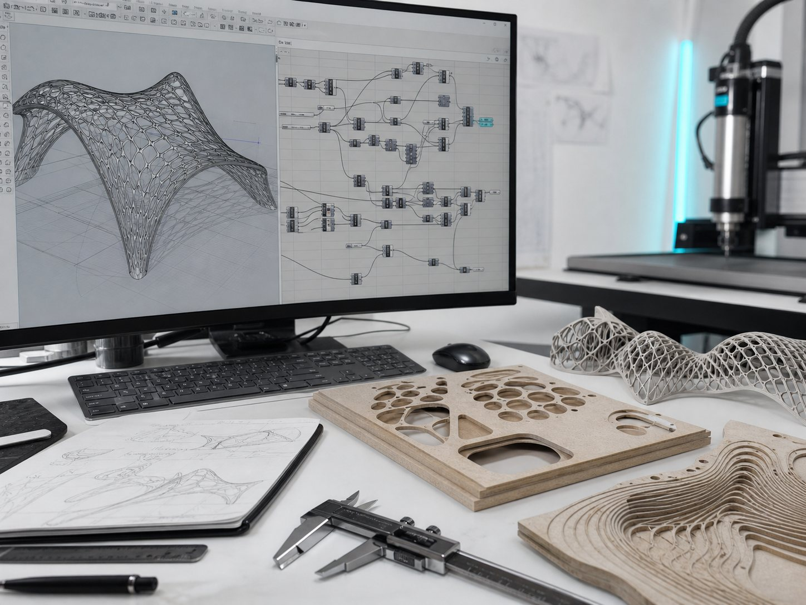

AXEL
LAB.
一个数字设计实验室，探索从算法到几何、从 AI 工作流到材料制造的完整路径。A personal digital laboratory exploring the path from algorithm to geometry, from AI workflow to material fabrication.

从设计目标到最终落地，完整记录。Projects documented from design goal to final fabrication.
每个项目都保留完整链条：概念、Rhino 建模、Grasshopper 逻辑、加工限制与最终落地。Each project keeps the full chain visible: concept, Rhino modeling, Grasshopper logic, fabrication constraints and final build.
一套可复用的真实项目工作流。A repeatable workflow for real projects.
语境、限制、材料、预算、生产与最终目标。Context, constraints, material, budget, production and outcome.
把设计意图转化为可控的几何、细节与图纸。Translate intent into controllable geometry, details and drawings.
探索参考、方案、效果图与沟通素材。Explore references, options, presentation and communication assets.
自动化编号、清理、批量导出与数据处理。Automate naming, cleanup, batch exports and data tasks.
材料、公差、装配逻辑与现场落地。Material, tolerance, assembly logic and on-site delivery.
紧贴实践的研究记录。Research notes stay close to the work.
Grasshopper 电池、建模笔记、加工经验与可复用流程记录。Grasshopper definitions, modeling notes, fabrication lessons and reusable process records.
全部笔记 →All notes →